Rejuvenation Trail: In the Footsteps of
Calamity and Creation (Competition)
@ Erez Shani Architecture
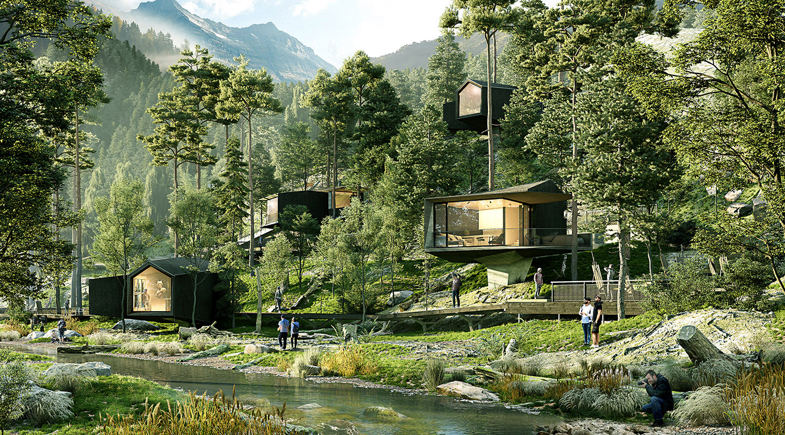
⨯

How does a modern imprint on the land look like? Michelangelo Pistoletto made his mark on the land of Malga Costa by tracing the origins of creation and excavating the symbol of infinity, thus forming the trench of peace and imagining a harmonious relationship between civilization and nature. Yet, once nature strikes, it can dramatically transform these relations. In the face of calamity, can we re-imagine a new imprint on the wounded land?
Taking inspiration from the Via Alpina trails, the Rejuvenation Trail offers a pedestrian scenic- route of pilgrimage along the remains of the mountain forest. The trail both commemorates all that has been damaged or destroyed, and celebrates the future regeneration of the forest and of Arte Sella open air museum.
We embark on the remarkable Villa Strobele and thus ascend north, following the mountain slope. At our feet, the 0.5km-long trail hovers over fallen trees and cutoff trunks; it winds gently amongst the surviving trees, so to make a minimal impact on natural landscape. On our way through the forest we discover a system of small structures accompanying the trail. These are artist’s ateliers - places of creating art and mediating artistic creation to the visitors, as well as being artistic landmarks in themselves. In between the ateliers we find outdoor workshops and an open auditorium, were we can meet and interact with the artists and architects and even follow their creative process. Several relaxation points provide us with scenic views of the forest’s devastation and rejuvenation, before we reach the high-point of our pilgrimage – the museum.
The museum of the disappeared works preserves the memory of the artworks which were destroyed by the storm. With its sculptural linear design, the museum performs as the indoor sequence of our trail, encompassing an inner courtyard which houses the remains of damaged artworks. Once passing through the linear galleries, we eventually come out back to the former ArteNatura trail, and thus our journey comes to an end.
All of these experiences together form the Rejuvenation Trail – a place of cultural-artistic gathering embedded in and indebted to its unique environment.
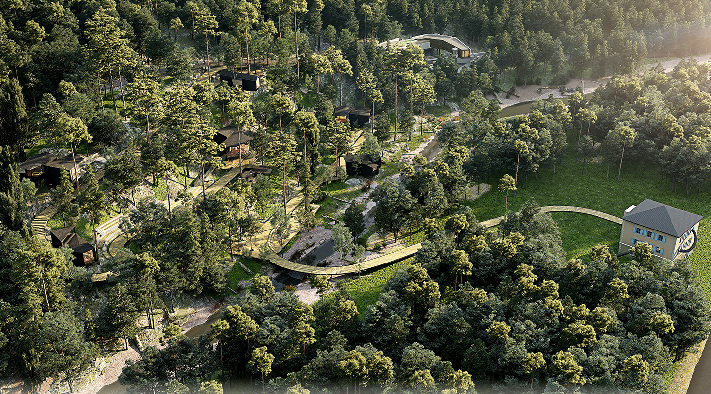
⨯

Bird’s-Eye View (rendering: Rembox)
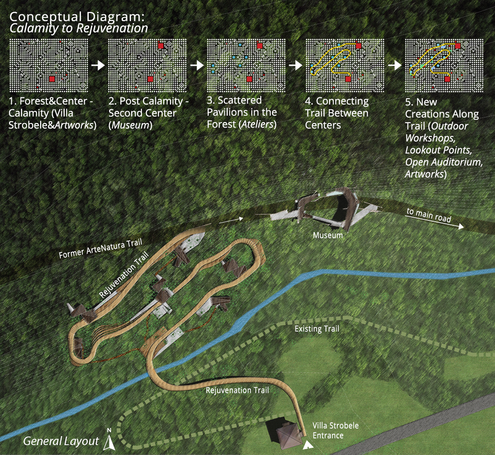
⨯

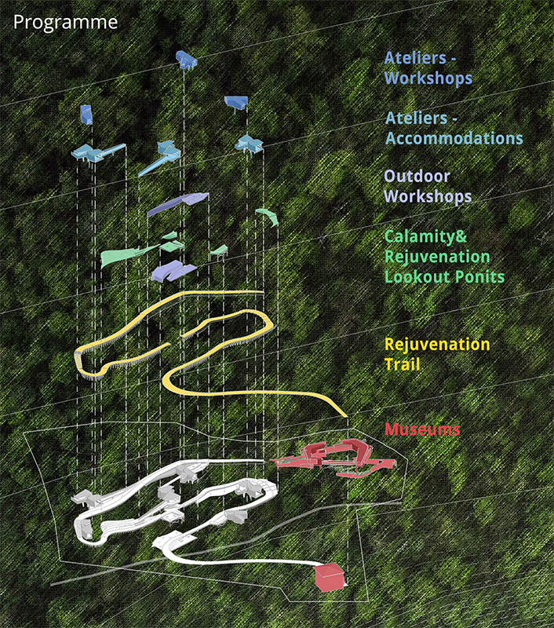
⨯

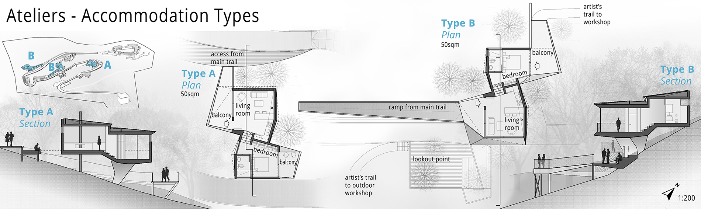
⨯

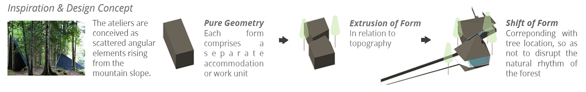
⨯

Ateliers Along the Trail (rendering: Rembox)
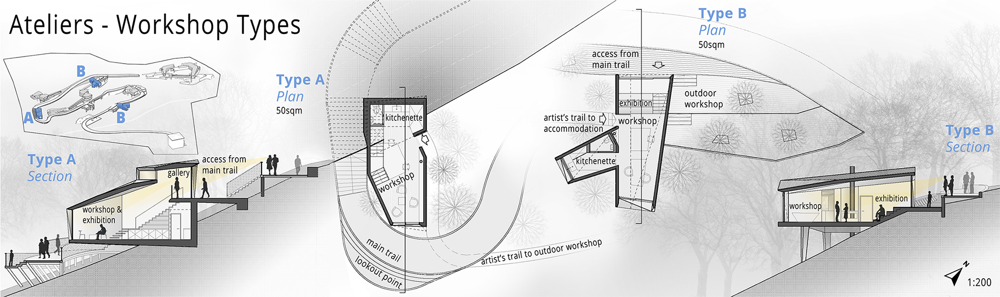
⨯

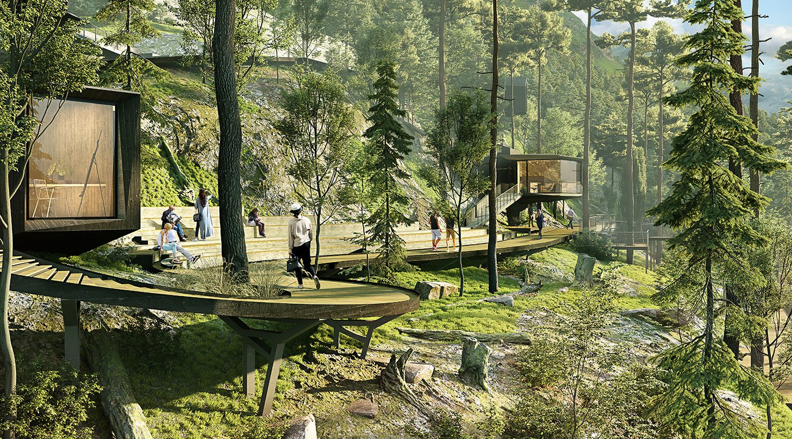
⨯

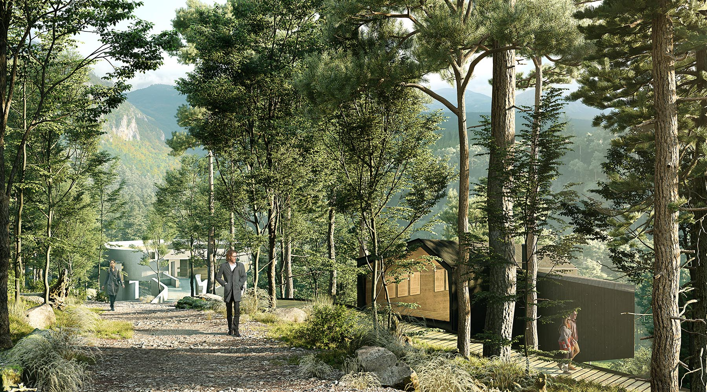
⨯

View from Trail toward the Museum Entrance (rendering: Rembox)
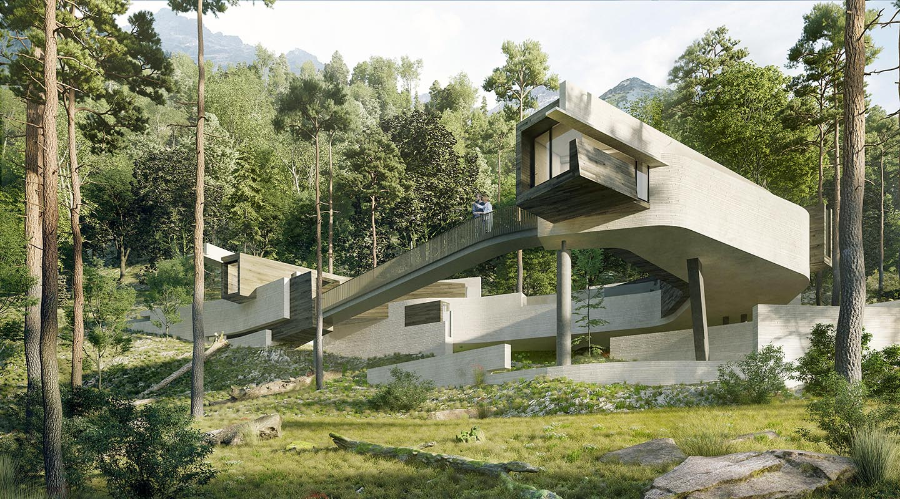
⨯

Museum of the Disappeared Works (rendering: Rembox)
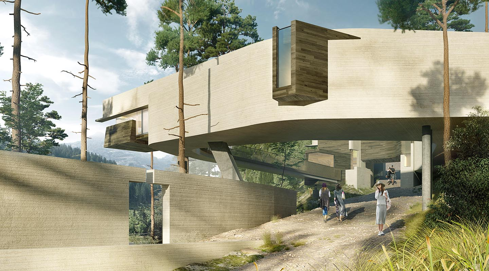
⨯

View from Trail to the Museum’s East Facade and Courtyard (rendering: Rembox)